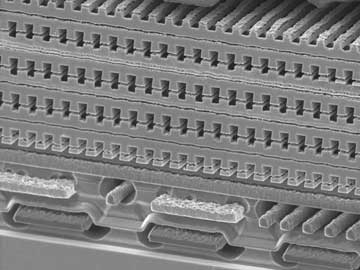
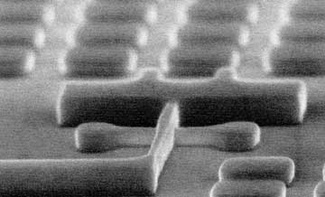
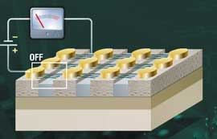
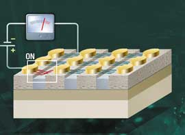
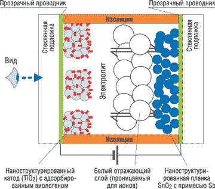

Наноустройства постепенно становятся повседневной реальностью нашей жизни. Вслед за Японией и США к исследованиям в данной области все более активно подключаются и страны Европы. Так, технологическая программа Евросоюза призвана предложить стратегию расширения исследований в нанообласти. Основная ее цель состоит в том, чтобы получить свою долю на формирующемся и быстрорастущем рынке, объем которого к 2015 г. некоторые эксперты оценивают в 1 трлн долл. Сегодня комиссия Евросоюза уже разработала стратегию развития нанотехнологий до 2013 г. включительно. С учетом нынешнего отставания от США и Японии рекомендуется утроить бюджетные ассигнования на развитие этой отрасли до 2010 г. и привлечь крупные средства частных инвесторов.
Эксперты из NanoMarkets (http://www.nanomarkets.net) оптимистично прогнозируют, что объем продаж разнообразных наноизделий к 2008 г. может достичь 15 млрд долл. Правда, прогнозы других аналитиков более умеренны: тот же рынок наноизделий они оценивают всего в 2,4 млрд долл.
Нанодиоды и нанотранзисторы
Нанотрубка представляет собой цилиндрическую структуру толщиной в несколько атомов, которая в зависимости от размера и формы может обладать проводящими либо полупроводниковыми свойствами. Например, если трубка прямая, она будет проводником, а если скручена или изогнута - полупроводником. Транзисторы на базе таких нанотрубок в сотни раз меньше тех, что содержатся в современных микросхемах. Одна из особенностей нанотранзисторов заключается в улучшенной емкостной связи между нанотрубкой и затвором, усиливающей донорство как электронов, так и дырок, а также распространение заряда вдоль нанотрубки на большие расстояния. Как известно, начиная с 2001 г., когда IBM представила первый одноэлектронный транзистор (Carbon Nanotube Field-Effect Transistors, СNFET), создано несколько различных вариантов подобных устройств. По мнению специалистов из IBM Research (http://www.research.ibm.com), исследовательского подразделения корпорации IBM, в идеале нанотрубкой в таком транзисторе будет заменяться только элемент доступа. При этом исток, сток и сама архитектура транзистора останутся без изменений.
Чуть позже ученым из подразделения IBM Research удалось получить углеродную мономолекулярную структуру в виде нанотрубки, которая полностью реализует один из трех основных логических элементов - элемент логического отрицания НЕ, преобразующий двоичную единицу в ноль и наоборот. Еще одна особенность созданного элемента заключалась в том, что выходной сигнал у него превышает входной приблизительно в полтора раза. Затем исследователи сконструировали на основе новых устройств инвертор, логическое ИЛИ - НЕ, а также триггер и мультивибратор.
Кроме того, в IBM Research разработали технологию получения массивов углеродных нанотрубок (до той поры не удавалось найти потенциально дешевый способ изготовления массивов на их основе). Все упиралось в то, что любой синтетический процесс предполагал задействование металлических нанотрубок, влияние которых очень сложно было устранить (они "портили" полупроводниковые свойства массива). Специалисты компании нашли относительно простой способ нейтрализации металлических нанотрубок в массиве, оставляющий неповрежденными углеродные трубки. Он получил название "конструктивной деструкции" (constructive destruction). Суть метода заключается в следующем. Массив "волокон" из металлических и полупроводящих нанотрубок (своеобразная заготовка) размещается на кремниевой пластине, верхняя сторона которой образована слоем оксида кремния. После этого методом литографии на пластину наносятся электроды. В дальнейшем им отводится роль электродов транзистора - затвора, стока и истока. Здесь же необходимо отметить, что нижний, кремниевый слой пластины тоже служит электродом, позволяющим сделать углеродные трубки токонепроводящими. После подобного блокирования углеродных нанотрубок между стоком и истоком подается высокое напряжение, из-за чего металлические трубки разрушаются. В результате такой процедуры остаются только полупроводящие трубки, формирующие массив транзисторов с заданными свойствами, который можно использовать для построения логических схем.
Сотрудникам исследовательского подразделения General Electric (GE, http://www.ge.com) удалось получить уникальное полупроводниковое устройство на основе углеродных нанотрубок. Дело в том, что изобретение инженеров GE может работать и как диод (именно на этом варианте акцентируется основное внимание специалистов), и как транзистор. Нанодиод - это одно из самых миниатюрных, если не самое миниатюрное, полупроводниковое устройство за всю их историю. Он выполнен по обычной схеме, путем соединения двух полупроводников: одного с электронной, а другого - с дырочной проводимостью. В случае традиционных полупроводников на базе кремния тип проводимости задается с помощью примесей, создающих избыток или недостаток электронов в структуре вещества. Но если процесс дозирования примесей к кремнию давно отработан, то ввести примеси в углеродные нанотрубки еще никому не удавалось. Поэтому исследователи пошли другим путем и решили создавать избыток или недостаток электронов в нанотрубках с помощью электрического поля. Для этого в нанодиод вводится миниатюрный электрод с разделенным на две части затвором. Два расположенных в одной плоскости затвора соединяются с двумя половинами нанотрубки. Таким образом, получается устройство, похожее на обычный полевой транзистор, где затвор также разделен на две независимые части. Чтобы полученная система функционировала как нанодиод, необходимо подавать на один затвор положительное напряжение, а на другой - отрицательное. В результате такой операции появится p-n-переход, необходимый для работы диода. Если же подавать на затворы одинаковое (только положительное или только отрицательное) напряжение, получится нанотранзистор, работающий по схеме p-n-p или n-p-n, в зависимости от знака приложенного напряжения.
В будущем такие нанодиоды смогут найти применение в компьютерной отрасли, индустрии связи, при изготовлении различных датчиков и другого электронного оборудования.
А вот специалисты Infineon Technologies (http://www.infineon.com) создали полупроводниковый материал с использованием нанотрубок, предназначенный для применения в силовых приборах. Обычные наноматериалы не выдерживают высокие напряжения и токи, и для производства силовых устройств используется традиционный кремний. Но команде разработчиков из Infineon удалось показать, что нанотрубки вполне пригодны для создания более миниатюрных и дешевых переключателей для управления, например, светодиодами или электрическими моторами с минимальными потерями энергии. Для этого около 300 углеродных нанотрубок упаковали параллельно друг другу в плотные пучки, и они работали как силовые транзисторы при напряжении 2,5 В и силе тока 2 мA.
Для создания такого транзистора (со стоком, истоком и затвором) требуется только одношаговый литографический процесс. Контакты истока и стока изготавливались из палладия, субстратом служила кремниевая пластина (хотя можно использовать и другой проводящий материал). Затем на эту основу случайным образом наращивались нанотрубки таким образом, чтобы число расположенных параллельно трубок оказывалось достаточным для обеспечения контакта между истоком и стоком. Созданный в Infineon прототип действительно позволял управлять светодиодами и микромоторами. Однако, как считают ученые, говорить о запуске новой технологии в производство еще очень рано.
Нанотрубки вместо проводниковИнженеры корпорации Fujitsu (http://www.fujitsu.co.jp) утверждают, что у них есть решение серьезной технической проблемы, с которой в будущем столкнутся производители микросхем. Они предлагают вместо медных проводов в микросхемах использовать углеродные нанотрубки. В микросхемах, которые планируется выпускать примерно в 2010 г., проводники, сделанные из меди, станут настолько тонкими и их сечение будет настолько мало, что уровень истечения электронов с поверхности таких проводников будет неприемлемо велик. Поскольку в таких медных проводниках электроны перемещаются довольно неэффективно, проводники нагреваются и выходят из строя. По мнению экспертов, с дальнейшим усовершенствованием микросхем (и уменьшением размеров их комплектующих) к 2010 г. ситуация только ухудшится. Специалисты Fujitsu считают, что углеродные нанотрубки, по существу, смогут заменить медь в микросхемах, размер которых будет примерно втрое меньше, чем сейчас. По имеющейся информации, Fujitsu стала первым производителем, объявившим о готовности использовать в микросхемах углеродные нанотрубки вместо медных проводов. Как известно, углеродные нанотрубки образуются, когда атомы углерода формируют полые, открытые с обоих концов цилиндры. Диаметр таких цилиндров составляет от 0,4 до 1,8 нм, а в длину они могут достигать нескольких сотен нанометров, в зависимости от того, каким образом формируются эти трубки. Углеродные нанотрубки поддерживают в тысячу раз большую плотность тока (ток на единицу площади), чем медные проводники. Кроме того, они передают электроны примерно в десять раз быстрее и значительно быстрее рассеивают тепло. Такие характеристики превращают нанотрубки в приемлемую замену медных проводников. Многие из современных микросхем выпускаются на основе процесса с соблюдением норм проектирования 90 нм. К 2010 г. проектные нормы для микросхем ужесточатся до 45 нм, а к 2013 г. - до 32 нм. Таковы прогнозы International Technology Roadmap for Semiconductors, отраслевой группы, которая помогает устанавливать стандарты для отрасли производства микросхем. В Fujitsu собираются использовать углеродные нанотрубки в некоторых из своих микросхем с нормой проектирования 45 нм и в большинстве или во всех микросхемах с нормой проектирования 32 нм. Помимо Fujitsu еще ряд ведущих технологических компаний, в том числе NEC и IBM, объявили об инновациях, касающихся процесса производства микросхем, и о своем понимании того, как использовать углеродные нанотрубки. |
Трехмерные полупроводники
Первую в мире коммерческую модель трехмерного полупроводникового прибора Matrix 3-D Memory компании Taiwan Semiconductor Manufacturing Corporation (TSMC, http://www.tsmc.com) и Matrix Semiconductor (http://www.matrixsemi.com) представили еще в конце 2001 г. Надо сказать, что попытки создания трехмерных интегральных схем предпринимались университетами, исследовательскими лабораториями и отдельными учеными еще с начала 70-х годов прошлого века. Помимо использования поликристаллического кремния, изменять структуру которого предполагалось с помощью лазерного луча, в этих работах предусматривались и другие конструктивные решения, позволяющие размещать несколько двухмерных микросхем друг над другом.
Вообще говоря, для тех областей применения, где ситуация складывается под воздействием все большего сокращения размеров микросхем и уменьшения затрат на их разработку, трехмерная архитектура полупроводниковых устройств позволила бы добиться поразительных преимуществ в цене по сравнению с традиционными. Современные интегральные микросхемы двухмерны (часто их называют планарными) по одной простой причине. Дело в том, что качество кристаллов, нужное для создания самых хороших транзисторов, сохраняется только в подложке или в самой кремниевой основе. Как только на эту подложку наносится изолирующий оксид или связующий металл, становится невозможным последовательно разместить атомы кремния таким образом, чтобы они сформировали требуемую кристаллическую решетку. Необходимый шаблон-подложка оказывается скрыт под этими слоями. В результате традиционные транзисторы создаются только в верхнем слое кремниевой подложки, а пространство над основой используется лишь для межсоединений.
Тем не менее главная мотивация для перехода на трехмерную архитектуру очень проста. Как и в случае с недвижимостью, стоимость кремния напрямую зависит от размера используемой площади (а не от объема). Таким образом, трехмерный метод производства имеет два очевидных преимущества. Во-первых, это существенное снижение цен в расчете на фиксированное устройство и, во-вторых, увеличение числа транзисторов на кристалле темпами не меньшими, чем предусматривает закон Мура в расчете на количество устройств, приходящихся на единицу площади.
Поскольку структура трехмерной интегральной схемы строится на основе двухмерной архитектуры (конструирование реальных устройств, а не только изоляторов и межсоединений на схеме над подложкой), трехмерная схема может использовать все существующие достижения в области полупроводниковых устройств, а вдобавок создать полностью новый диапазон решений. Эксперты полагают, что радикальное увеличение плотности, которое становится возможным благодаря вертикальному размещению элементов, вполне реально будет способствовать многократному сокращению затрат на производство микросхем по сравнению с традиционными микросхемами при той же технологии производства. Интересно, что, по одной из оценок, изготовление акра обычных кремниевых транзисторов обходится примерно в 1 млрд долл.
Кроме того, эксперты вполне резонно предполагают, что трехмерные микросхемы могли бы масштабироваться по крайней мере с той же скоростью, какую предусматривает закон Мура, тем самым давая потребителям возможность со временем использовать все преимущества трехмерной технологии и по-прежнему сокращать затраты на производство, на что рассчитывают участники отрасли.
В 1998 г. во главе новой компании Matrix Semiconductor, которая занялась созданием трехмерных (3D) полупроводниковых устройств, стали два профессора Стэнфордского университета - Марк Джонсон и Томас Ли. Последний начинал свою карьеру в качестве проектировщика микросхем еще в компании Analog Devices. В 1992 г. Томас Ли пришел в фирму Rambus, где занимался разработкой высокоскоростных микросхем оперативной памяти по КМОП-технологии. Кроме того, он принимал участие в создании некоторых микропроцессоров, в частности, K6 и K7, в корпорации AMD, а также процессоров StrongARM и Alpha в компании Digital Equipment. В 1994 г. профессор Ли был приглашен в Стэнфордский университет, где его основные научные интересы были сосредоточены на микросхемах как проводной, так и беспроводной связи в гигагерцовом диапазоне.
В основу проектируемых продуктов Matrix Semiconductor легла технология многослойного размещения транзисторов. Сегодня инвесторами компании выступают такие крупнейшие корпорации, как Nintendo, Microsoft, Seagate, Sony и Thomson. Надо сказать, что сама идея 3D-транзисторов переживала подъемы и крушения. Сначала Matrix Semiconductor планировала наладить массовый выпуск своих микросхем в 2002 г. Однако, по словам одного из ведущих менеджеров компании, главный урок, извлеченный из последовавших неудач, состоял в том, что изготовить что-то в одном экземпляре легко, а производить то же самое миллионными тиражами очень трудно. В конструкцию микросхем и процесс их изготовления пришлось вносить серьезные изменения.
Несмотря на череду задержек, Matrix Semiconductor летом 2004 г. все-таки выпустила трехмерные микросхемы памяти, используя мощности тайваньского полупроводникового гиганта TSMC. При производстве кристаллов для получения базовых слоев соблюдаются проектные нормы 0,15 мкм, а для последующих - 0,13 мкм. В отличие от флэш-памяти микросхемы Matrix 3-D Memory представляют собой ПЗУ с однократной записью. Иными словами, данные записываются на них методом "прожига" плавких перемычек. По этой причине потенциальный рынок для них довольно узок. Однако стоит отметить, что себестоимость подобных изделий почти вдвое меньше, чем у флэш-памяти. Поэтому компания в первую очередь нацеливается на промышленных заказчиков, желающих выпускать кристаллы с записями аудио, видео и другими неизменяемыми файлами. Например, фирма Mattel приспособила этот кристалл для хранения мультфильмов на своем портативном видеоплеере Juice Box. Другой потенциальный заказчик - корпорация Nintendo; еще в начале 2003 г. этот игровой гигант инвестировал в Matrix Semiconductor около 15 млн долл.
Особое внимание компания уделила совместимости с нынешними стандартами - новые микросхемы энергонезависимой памяти совместимы по контактам с кристаллами флэш-памяти с организацией NAND. Благодаря этому карты на основе Matrix 3-D Memory можно устанавливать в разъемы для флэш-носителей разнообразных цифровых устройств (включая фотокамеры, плееры, карманные игровые консоли, персональные электронные секретари, мобильные телефоны и т. д.), применяя их в качестве недорогой альтернативы для однократной записи информации.
В мае 2005 г. Matrix Semiconductor анонсировала новый кристалл трехмерной памяти (имеющей четыре уровня транзисторов, рис. 1) емкостью 1 Гбит и размером всего 31 кв. мм.
|  | Рис. 1. Кристалл Matrix 3-D Memory содержит четыре слоя транзисторов.
|
Необычные транзисторы
Примерно в то же время, когда из Matrix Semiconductor приходили победные реляции о создании трехмерных полупроводников, ученые из IBM Research на международной конференции по схемотехническому проектированию International Electron Devices Meeting рассказали о новой конструкции трехмерных микросхем, в которых транзисторы расположены в два или более слоев, а производственный процесс напоминает выпечку многослойного пирога. По их мнению, со временем именно такая конструкция может привести к появлению более мощных микропроцессоров с гораздо большим числом транзисторов по сравнению с современными однослойными структурами. Кроме того, в этом случае сокращается длина проводников, соединяющих транзисторы в микросхеме. Сегодня эксперты говорят о том, что подходы, используемые исследователями из Matrix Semiconductor и IBM, были довольно близки, однако в IBM более реально смотрели на вещи и оценивали новую технологию только как перспективу.
Надо сказать, что в начале XXI века интерес к полупроводниковым приборам с трехмерной структурой стали проявлять многие крупнейшие корпорации. Так, исследователи IBM в 2001 г. объявили о создании альтернативного типа транзистора, который благодаря лучшему управлению эффектом короткого канала, близкой к идеальной характеристике субпорогового напряжения и высокой подвижности носителей в канале сможет стать многообещающим кандидатом для будущих микросхем с высокой плотностью размещения элементов и малой потребляемой мощностью. При разработке этого прибора неоценимым оказался опыт корпорации в области технологии "кремний на изоляторе". Ток транзистора с двумя затворами и, следовательно, его сигнал почти вдвое выше, чем в обычном МОП-приборе с большими размерами элементов. Такую структуру легко масштабировать, и на ее базе можно выполнить практически любой тип МОП-транзистора. Основная задача при ее формировании состоит в получении приемлемого значения порогового напряжения транзисторов быстродействующих логических устройств при контроле значения проводимости канала.
Особый интерес представляет разновидность транзистора с двойным затвором - FinFET. В этом приборе тонкое кремниевое тело (fin - столбик, вставка) как бы "обернуто" затвором, который формирует два совмещенных канала, расположенных с двух сторон кремниевого тела. Выступающая передняя область тела - исток транзистора, выступающая задняя область - сток. Ток протекает в плоскости, параллельной плоскости тела, т. е. хотя затворы и выступают за пределы этой плоскости, структуру FinFET можно рассматривать как квазипланарную. Активная ширина прибора равна высоте тела-столбика, и ее можно увеличивать путем параллельного включения многих столбиков. По своей топологии FinFET не отличается от традиционного МОП-транзистора, за исключением того, что активная область формируется вставками, а не представляет собой плоский прямоугольник. Изготовление FinFET легко наладить: все необходимые технологические операции широко используются в современном полупроводниковом производстве и хорошо отработаны. Правда, самый критичный параметр этой структуры - толщина канала - зависит от разрешения процесса литографии.
В IBM были созданы симметричные и асимметричные n- и p-канальные МОП-транзисторы этого типа, характеристики которых оптимизированы для получения высокого быстродействия и низкого порогового напряжения соответственно. Процесс изготовления полностью обедненного симметричного FinFET предусматривает формирование рисунка тела-вставки толщиной 20 нм методами фотолитографии. Структура затвора состоит из термически выращенной пленки оксинитрида толщиной 1,6 нм и поликристаллического кремния. Выступающие области истока/стока изготовлены путем ионной имплантации с четырех сторон пластины.
Совместными усилиями Калифорнийского университета в Беркли, корпорации Intel и Национальной лаборатории им. Лоуренса была создана FinFET-структура с длиной канала менее 20 нм, в которой размеры кремниевой вставки задаются промежутками между поликремниевыми затворами, а области истока/стока - процессом литографии. За счет нанесения специальных пленок на боковые стенки каждого промежуточного зазора разработчикам удалось вдвое увеличить ток транзистора и уменьшить толщину вставки в сравнении с приборами, изготовленными только с помощью процесса литографии. Структура затвора состояла из термически выращенного оксида толщиной 2,4 нм и SiGe толщиной 400 нм.
Новый FinFET-транзистор корпорации AMD стал результатом ее сотрудничества с учеными Калифорнийского университета и консорциумом Semiconductor Research. Это устройство имело длину затвора всего 10 нм.
Транзисторы Intel Tri-Gate
Как известно, видение корпорацией Intel развития фундаментальных элементов платформ на долговременную перспективу, а также архитектурные инновации и фундаментальные знания, которые движут это развитие, изложены аналитиками в документе "Платформа 2015". Там, в частности, говорится о том, что до 2015 г. и далее полупроводниковая производственная КМОП-технология будет развиваться такими же темпами, что и сейчас. Тенденция появления новых материалов и новых структур будет продолжаться. При этом в качестве примеров технологий, находящихся в стадии разработки, названы диэлектрики high-k/Metal Gate и транзисторы с трехмерным затвором (или Tri-Gate-транзисторы).
Как известно, экспериментальный дизайн транзистора, получившего название Tri-Gate (рис. 2), впервые был представлен в Японии на конференции International Solid State Device and Materials в 2002 г. В его основе лежала трехмерная структура, представляющая собой "микробрусок", который с трех сторон облегают изолятор и проводник затвора. Подобная структура позволяла посылать электрические сигналы как по верхней части "бруска", так и по обеим его вертикальным сторонам. "Микробрусок" превращается в исток (сток) за пределами затвора. Увеличенная таким образом площадь, доступная для прохождения сигнала, дает возможность пропускать на 20% больше тока по сравнению с традиционной планарной конструкцией, занимающей аналогичную площадь.
|  | Рис. 2. Tri-Gate - транзистор с трехмерным затвором.
|
В Tri-Gate использованы элементы технологии TeraHertz, представленной специалистами Intel в декабре 2001 г. Подобная технология позволяет создавать транзисторы, которые работают на частотах переключения порядка терагерц и обладают способностью к масштабированию. Такой класс транзисторов предназначен для того, чтобы максимизировать уровень производительности при уменьшении энергопотребления и стоимости производства. Заметим, что транзисторы, выполненные на основе технологий high-k/Metal Gate и Tri-Gate, относятся к классу TeraHertz.
Тройной затвор строится на сверхтонком слое полностью обедненного кремния, уменьшающего ток утечки закрытого транзистора. Он имеет наращенные сток и исток, позволяющие избежать роста сопротивления при уменьшении размеров транзистора. Кроме того, в новом транзисторе может использоваться диэлектрик high-k, дополнительно снижающий ток утечки затвора.
Напомним, что наличие тонкого слоя диоксида необходимо для достижения высоких эксплуатационных характеристик диэлектрика затвора. Диоксид кремния - материал, молекулы которого состоят из одного атома кремния и двух атомов кислорода. Это хороший изолятор, однако проблема состоит в том, что чем тоньше слой диоксида кремния, тем выше ток утечки, проходящий через изолятор. Следовательно, необходимо заменить диоксид кремния новыми материалами, обладающими теми же свойствами, использование которых не потребует низкой толщины слоя.
Материал на основе технологии high-k способен заменить диоксид кремния при изготовлении электрода затвора, поскольку этот материал обладает весьма неплохими изолирующими свойствами, а также создает достаточное емкостное сопротивление между затвором и каналом. Оба этих свойства желательны для достижения высоких эксплуатационных характеристик транзисторов. Символ "k" (на самом деле греческая буква "каппа") указывает на способность материала сохранять электрический заряд. Те материалы, которые могут хранить электрический заряд лучше, чем другие, обладают более высоким значением k. Применение материалов на основе технологии high-k намного уменьшает утечки, так как эти материалы могут иметь иную толщину, чем диоксид кремния, при сохранении тех же свойств.
Еще одно преимущество транзисторов Tri-Gate связано с тем, что выпускать микросхемы на их базе можно и с помощью существующего оборудования. Кроме того, можно строить структуры из нескольких "брусков" Tri-Gate, формируя силовые транзисторы. Как отмечают в Intel, этот тип транзистора разработан корпорацией, чтобы обеспечить развертывание нового 45-нм технологического процесса в 2007 г. Кроме того, в Intel планируются более глубокие исследования в области транзисторов III-V, углеродных нанотрубок и кремниевых нанопроводников. Цель всех этих исследований - увеличение скорости работы устройств, дальнейшее уменьшение их размеров, управление питанием и сокращение потребляемой мощности. Кроме того, интеграция между архитектурой кристаллов и производственной технологией позволит достичь еще большей плотности: на одном кристалле можно будет расположить миллиарды транзисторов. Такой подход очень важен. В процессе создания микропроцессоров и платформ будущего разработчики и технологи должны сотрудничать очень плотно.
Нанопамять
Неудивительно, что многие фирмы, занятые наноразработками, нацелены на рынок запоминающих устройств, - пожалуй, именно эти изделия сегодня более всех нуждаются в радикальном обновлении. При этом большое значение имеет внедрение новых альтернативных технологий, а не только использование ставшего уже привычным масштабирования. Дело в том, что масштабирование затрудняется такими хроническими недостатками традиционных запоминающих устройств, как утечка накопительных конденсаторов, а также все возрастающей сложностью структуры, чувствительностью к случайным сбоям, вызванным космическими лучами. Другие извечные проблемы заключаются в больших размерах ячеек памяти статических запоминающих устройств, трудностях интеграции динамических запоминающих устройств и флэш-памяти с логическими схемами, а также связаны с медленной скоростью считывания данных из флэш-памяти и ограниченным сроком ее службы.
Аналитики насчитали около двадцати альтернативных технологий, нацеленных на рынок запоминающих устройств. Это, в частности, магнитные, ферроэлектрические, молекулярные, MEMS-технологии, а также память на нанотрубках. Объем рынка запоминающих устройств в настоящее время составляет около 48 млрд долл., а к 2008 г., по прогнозу компании iSuppli (http://www.isuppli.com), он достигнет почти 57 млрд долл.
Молодая американская компания Nantero (http://www.nantero.com) активно занимается разработкой новой технологии создания энергонезависимой оперативной памяти на основе углеродных нанотрубок - NRAM (Nanotube-based Random Access Memory). По словам разработчиков, такая память будет сочетать в себе лучшие качества запоминающих устройств - дешевизну (DRAM) и энергонезависимость (флэш-память), а также будет обладать высокой стойкостью к воздействию температуры и магнитных полей. Само запоминающее устройство состоит из двух кремниевых подложек, на которых особым образом размещены массивы нанотрубок. Напомним, что толщина углеродной нанотрубки составляет примерно 1/10000 диаметра человеческого волоса, а толщина ее стенки сравнима с размерами атома. Технология массачусетской компании использует два таких свойства, как эластичность (гибкость) нанотрубок и притягивание атомов углерода друг к другу под воздействием ван-дер-ваальсовых сил.
Нанотрубки закрепляются на кремниевой подложке, а под ними на расстоянии примерно 120 нм располагается углеродный субстрат. Утверждается, что малое расстояние между соседними подложками вместе с ничтожными размерами нанотрубок позволяют достичь скоростей записи-чтения порядка половины наносекунды.
Сначала Nantero предлагала изготавливать элементы памяти, в которых одна нанотрубка вступает в контакт с другой, расположенной перпендикулярно к ней. Это позволило бы создавать кристаллы памяти с невероятно высокой плотностью, но большинство специалистов сомневается, что компании удастся найти способ возведения миллионов одинаковых микроскопических перемычек на узкой полоске кремния площадью в несколько квадратных сантиметров. К тому же нанотрубки должны быть почти идентичными (а добиться этого пока никак не удается) и ориентированными в одном и том же направлении.
В предложенной компанией архитектуре кристаллов слой нанотрубок наносится на подложку. Затем методом обычной литографии на нем "вычерчивают" электрические контакты, соединенные друг с другом "толстыми" лентами из нанотрубок. При этом пространственная ориентация нанотрубок и степень их идентичности не имеют значения; главное, чтобы ленты проявляли нужные механические свойства. Электрический заряд небольшой силы, возникающий на нижней подложке, притягивает к последней группу нанотрубок, расположенных над ней. Далее притянутые нанотрубки удерживаются в таком состоянии под действием ван-дер-ваальсовых сил до появления следующего электрического заряда. Благодаря такому устройству свисающие нанотрубки могут играть роль битов памяти: "поднятое" состояние - "0", "опущенное" - "1" (рис. 3, 4). Так как в каждом отдельном переходе между указанными состояниями участвует несколько десятков нанотрубок, создается избыточность, предохраняющая систему от случайных потерь информации. В "замкнутом" и "разомкнутом" состояниях система из нанотрубок имеет различное электрическое сопротивление, за счет чего возможно считывание информации. Одна из проблем состояла в том, чтобы добиться требуемого расположения нанотрубок на подложке. В Nantero предложили оригинальное решение: сначала вся поверхность кремниевой подложки покрывается тонким слоем нанотрубок, а после этого те из них, которые являются "лишними", удаляются.
|  |  |
| Рис. 3. В ячейке NRAM записан "0".
|
Рис. 4. В ячейке NRAM записана "1".
|
В настоящее время специалисты Nantero уже создали работающий прототип массива NRAM. Проблему организации серийного выпуска устройств памяти на базе нанотрубок они решают совместно с компанией LSI Logic (http://www.lsilogic.com), которая рассчитывает использовать технологию NRAM при разработке ASIC-микросхем следующего поколения (в настоящее время для таких кристаллов применяется флэш-память). В частности, LSI Logic заявила о готовности интегрировать до 30 Мбит NRAM-памяти в микропроцессор для мобильных телефонов. Утверждается, что предлагаемая методика пригодна и для получения массивов большего размера, поскольку определяющим фактором здесь оказываются возможности литографического оборудования. Кроме того, особо подчеркивается, что методика в значительной мере совместима с нынешними технологиями полупроводникового производства и с небольшими затратами может быть внедрена на действующих фабриках.
Нанодисплеи
Не секрет, что дисплеи, выполненные с использованием нанотехнологий, уже активно осваивают рынок. Не остался в стороне и рынок "электронной бумаги". Так, в прошлом году малоизвестная пока ирландская компания Ntera (http://www.ntera.com) представила свой продукт NanoChromics Display (NCD). В частности, на конференции DEMO 2005 компания продемонстрировала образцы устройств с NCD-дисплеями - модифицированную версию MP3-плеера Apple iPod и электронную книгу eBook reader.
Одно из названий нового дисплея, разработанного компанией, - "дисплей типа чернила на бумаге" (ink-on-paper display). Как объясняют представители Ntera, назван он так потому, что изображение, сформированное на дисплее, похоже на бумажный рисунок, выполненный чернилами. Эксперты отмечают, что изображение действительно довольно контрастно, а угол обзора для данного экрана составляет 180 град. Это соответствует максимальному значению данного параметра для любых дисплеев вообще. Скорость отклика матрицы в NCD-экранах также достаточно высока. Например, как заверяют представители фирмы, продающиеся сегодня устройства с данными дисплеями могут обеспечивать частоту 60 кадров в секунду.
Изображение остается на дисплее даже тогда, когда питание отключается. Этот эффект достигается благодаря переключению пигментных слоев, которые формируют пикселы. Так как изображение формируется пигментом, дисплей не нуждается в дополнительной подсветке, что существенно снижает его энергопотребление. Стоит также отметить, что для прорисовки начального изображения экран потребляет довольно много энергии. Однако полученное изображение остается на экране в течение многих дней или недель, не нуждаясь в дополнительном электропитании.
Представители компании считают, что при одинаковых размерах NCD-устройство будет потреблять всего 10% той энергии, которую расходует ЖК-дисплей. Тот факт, что NCD не потребляет энергии для формирования картинки длительное время (энергия нужна только для переключения слоев пигмента, как говорилось выше), позволяет в принципе создавать на базе данных устройств различные элементы визуального отображения. Заметим, что рабочее напряжение NCD-панели не превышает 1 В.
Для отображения высококонтрастной картинки на дисплее разработчики используют необычные свойства электрохромных полимеров. Как известно, одна из замечательных особенностей пленок проводящих полимерных соединений - их способность изменять свои оптические характеристики, в частности цвет, при изменении уровня окисления. Если данный уровень регулируется потенциалом электрода, на который этот полимер нанесен, то оптическими характеристиками полимера можно управлять с помощью электрического сигнала - так называемый электрохромный эффект. В NCD-экранах на тонкий слой диоксида титана наносится прозрачный полимер - виологен - с нанопористой структурой, который при изменении приложенного к нему электрического потенциала способен терять прозрачность, достигая при этом уровня насыщенного черного цвета.
Принцип действия дисплея NanoChromics на первый взгляд довольно прост (рис. 5). Экран состоит из нескольких слоев, два из которых формируют изображение: внешний отражающий слой, состоящий из наночастиц диоксида титана, и электрохромный слой с красящим пигментом. Пространство между диоксидом титана и виологеном заполнено специальным электролитом. При отсутствии внешнего потенциала экран выглядит абсолютно белым, однако при приложении напряжения виологен окрашивается в близкий к черному цвет. Если изменить полярность напряжения, то слой "переключится" в такое состояние, при котором будет виден только отражающий пигмент диоксида титана. За счет этого формируется картинка. Таким образом, "включая" или "выключая" отдельные участки дисплея NanoChromics, можно формировать изображение с хорошей контрастностью.
|  | Рис. 5. Принцип работы NCD-экрана.
|
Благодаря значительной мобильности пигментного слоя на основе электрохромных наночастиц достигается высокая скорость переключения, что, в свою очередь, позволяет добиться необходимой частоты смены кадров (до 60 кадров в секунду). Пока компания выпустила только монохромные дисплеи, но представители Ntera утверждают, что возможно дальнейшее развитие этой технологии для создания цветных дисплеев (необходимо будет добавить к одному пигментному слою еще два цвета). Новые мониторы также неприхотливы к температуре окружающей среды. Например, настольные часы, использующие NCD-дисплей, работают в температурном диапазоне от -35 до +80 ?С.
Согласно заявлениям инженеров Ntera, сами экраны просты в изготовлении. Традиционный завод по производству ЖК-панелей можно быстро и без больших затрат перепрофилировать на выпуск NanoChromics. Для этого понадобится дополнительная печь стоимостью около 20 тыс. долл. и изменение некоторых технологических процессов. Более того, в компании утверждают, что ее NCD-экраны можно производить с лучшими характеристиками и меньшими затратами, чем ЖК-панели. Пока Ntera продает отдельные дисплеи, настольные часы и приборы для медицинского пользования, но скоро появятся электронные книги и карманные компьютеры.